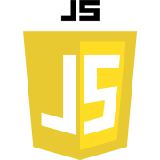
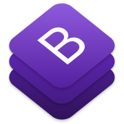
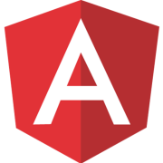

HTML
A HTML é uma linguagem de marcação utilizada para estruturar todo o conteúdo das páginas web, definindo elementos como parágrafos, títulos, imagens, etc. Sendo assim, essa linguagem é utilizada na construção de qualquer página web e, portanto, deve ser conhecida por todo programador que trabalha com esse tipo de aplicação.
CSS
CSS é uma linguagem declarativa usada para editar o aspecto visual dos elementos presentes em uma página web. Enquanto o HTML tem o objetivo de estruturar o conteúdo da página, o CSS é adicionado para dar o visual adequado a ela.
JavaScript
O JavaScript é uma linguagem de programação amplamente utilizada no front-end para diferentes finalidades. Desde validação de campos à criação de menus, é possível fazer muita coisa usando essa linguagem que adiciona algum dinamismo às páginas que apenas com HTML e CSS são consideradas “estáticas”.
JQuery
A jQuery é uma biblioteca JavaScript que tem por lema “escrever menos e fazer mais”, ou seja, ela permite fazer com menos linhas de código o que seria bem mais complexo com JavaScript “puro”. Entre seus principais recursos está a manipulação do DOM (Document Object Model), que é simplificado por suas funções e seletores.
APIs do HTML5
Booststrap
Além das novas tags o HTML5 trouxe um conjunto de APIs que podem ser acessadas via JavaScript para implementar funcionalidades comuns em aplicações web. Uma das principais é o Web Storage, mecanismo que permite armazenar dados localmente no browser.
Bootstrap
O Bootstrap é um framework para desenvolvimento web front-end (HTML, CSS e JavaScript) que adiciona às páginas recursos de responsividade, diversos componentes de interface e estilos leves e modernos. Atualmente é um dos frameworks mais usados no mercado, por isso é importante conhecê-lo.
Angular
Uma aplicação web pode ser vista como um diálogo entre cliente e servidor, no qual o cliente solicita ao servidor a informação a ser apresentada. Ao longo dos anos, esse cenário foi posto em prática de muitas formas, dentre elas, com a separação dessas duas partes em sistemas isolados, trocando informações através de arquivos XML ou, como é mais comum atualmente, JSON.
React
O React foi desenvolvido no Facebook para atender as demandas da aplicação web dessa rede social, cuja interface é complexa e composta por várias partes que atuam em conjunto ou isoladamente. Usando o conceito de componentes o React propõe a divisão das interfaces em partes menores e desenvolvidas separadamente, o que as torna mais fáceis de manter e reutilizar.